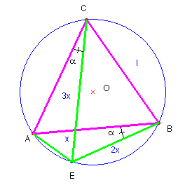

Problema 105.- En el desierto del Sahara y en tres puntos A, B, C, que forman los vértices de un triángulo equilátero de 700 km de lado, se encuentran tres vehículos cuyas velocidades respectivas son de 20 km/h, 40 km/h y 60 km/h, comunicados por radio con el centro de operaciones, reciben la orden de partir a reunirse lo antes posible. ¿Dónde está situado el punto de la reunión? (las motos siempre están en movimiento, precisión del editor)
Solución de Saturnino Campo Ruiz, profesor de Matemáticas del I.E.S. Fray Luis de León (Salamanca) (24 de julio de 2003)

Sea l= 700 Km. Teniendo en cuenta las velocidades de los tres vehículos el punto de encuentro E ha de estar a distancias x, 2x y 3x respectivamente, de cada uno de los vértices del triángulo ABC. Este punto de encuentro no puede ser un punto interior del triángulo, pues, con los segmentos x, 2x y 3x, no es posible construir un triángulo, y esta propiedad caracteriza a los triángulos equiláteros. (Véase problema nº 77). Tampoco puede estar sobre un lado, pues resultaría AE + EB = 3x = l (lado del triángulo) y 3x ha de ser menor que l si E está sobre AB. En consecuencia, el punto E es exterior, y está, como veremos, sobre la circunferencia circunscrita. En efecto: en el cuadrilátero ABCE se verifica que la suma de los productos de los pares de lados opuestos, 2lx + lx, es igual al producto de sus diagonales, 3lx, y esta es una condición necesaria y suficiente para que un cuadrilátero sea convexo e inscriptible (Consecuencia del Teorema de Tolomeo).Al pertenecer E a la circunferencia circunscrita, los ángulos AEB y CEB son ambos de 60º, por el teorema del ángulo inscrito y ser equilátero el triángulo ABC. Para hallar la distancia x de A al punto de encuentro E utilizando el teorema del coseno tenemos l2 = x2 + 9 x2 –6 x2 cos 60º, de donde obtenemos x = 264.58 Km. Con el teorema de los senos y calculadora hallamos sen a = , y a = 19º 6’ 23.7”